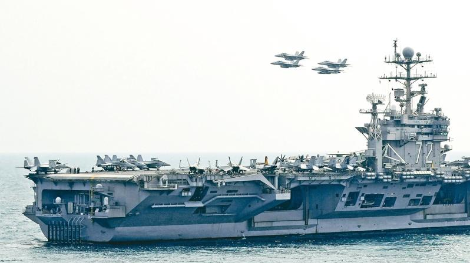

五角大厦于宣布，将调派尼米兹级核动力航空母舰「林肯号」(USS Abraham Lincoln)打击群，以及更多战机、军舰开赴中东。有线电视新闻网(CNN)引述官员报导，预料伊朗将为报复巴勒斯坦武装团体哈玛斯领袖哈尼雅(Ismail Haniyeh)7月在德黑兰被暗杀身亡而袭击以色列，时间可能在接下来几天。华尔街日报报导则称，伊朗最快3日就将发动攻击。
五角大厦副发言人辛赫声明，美国国防部长奥斯丁2日已下令，林肯号取代正在阿曼湾运行任务的「罗斯福号」(USS Theodore Roosevelt)航母打击群，并向中东、地中海加派更多能防御弹道飞弹攻击的巡洋舰与驱逐舰，以及部署更多陆基飞弹防御系统，在中东增派一个战斗机中队，加强空中支持能力。罗斯福号舰载机约40架，包括Ｆ/Ａ–18与匿踪战机Ｆ–35。
声明提到，为强化对美军部队的保护，奥斯丁已指示调整美国目前的军事态势，并增加对以色列国防的支持，确保美国做好因应各种突发事件的准备。声明虽未透露前述美国军事资产何时到位，但表明旨在「降低伊朗或其伙伴与代理人导致地区(紧张)升高的可能性」，「我们将与以色列站在一起，支持他们自我防卫」。
▼收听一洲焦点播客版(Podcast)：
外界原以为，在罗斯福号打击群完成目前于中东的部署后，五角大厦可能不会做出调动，但奥斯丁决定改派林肯号替换。他是在和以色列防长葛朗特通话后发布命令，奥斯丁并在电话中承诺将提供以国更多支持。
地面部队方面，美军在中东正驻扎一个陆战队两栖战备群，总兵力约4000人；东地中海还有两栖攻击舰「黄蜂号」等五艘军舰，必要时即可驰援以色列。CNN报导说，这可能是自去年10月以哈开战头几天以来，美军对中东的最大规模行动。
另外，白宫国安会发言人柯比表示，「我们已听到伊朗最高领袖(哈米尼)大声又清楚的言辞」，即他打算就哈尼雅之死报复，「他们想对以色列实施另一次攻击」，「我们必须确保在该地区有适当的资源和能力」。
以色列官方至今仍未公开承认暗杀哈尼雅。但伊朗革命卫队3日表示，以色列从哈玛斯政治领袖哈尼雅在伊朗首都德黑兰下榻的住所外发射一枚「短程抛射体」，将他击毙。
革命卫队发布声明表示：「这次恐怖行动从住宿区外发射一枚载有约七公斤弹头的短程抛射体(short-range projectile)，引起强烈爆炸。」
革命卫队还说，以色列的这次攻击「得到美国支持」。
伊朗和巴勒斯坦伊斯兰主义组织哈玛斯已誓言报复。革命卫队重申坚替哈尼雅复仇，并表示以色列将在「适当的时间、地点和方式，受到严厉的惩罚」。